2016-06-19 Sarah 先上个大合影~~有木有看到男神？？？ Table Topic Session TTM Joshua：北航头马新任掌门人 就职宣誓：建设高质量的北航TMC Q：好友与自己同时爱上一位帅哥怎么办？ A：漂亮自信大方的Grace相信自己有信心有能力另外找到一位属于自己的真爱（点个赞！） Grace Peter Q：有人说妥协可耻，有人说妥协是一种智慧，你怎么看？ A：是否妥协要视情况而定，要看结果是怎样的，然后决定是否妥协。（标准英音，一出场就俘获了众多女性头马会员的芳心，男神指数5颗星~~~） Q：如果老板不同意自己的工作方案，事实上那是唯一正确的方案，你该怎么做？把老板逼疯还是老老实实解决问题？ A：考虑到老板是发薪水的人，很多时候还是要对老板妥协的~~（如果理由充分，也可以试试说服老板~~~） Sophie John
Q：爱情和面包之间，选其一。 A：面包。（经济基础决定上层建筑）没有面包，爱情也会终结。（其实，小编认为，选择面包，是一种比较现实的做法，也是对未来的爱情比较负责的一种做法~~） Q：父母喜欢在很多方面替自己做决定，比如工作、交由、约会等，如果有不同意见咋办呢？ A：我会坚持自己的意见，深思熟虑后，一定会竭尽全力的说服爸妈。（小编支持勇敢表达自己~~~） Francis Sun Zhaoyong Q：讲一个尽管很难，仍然坚持下来做的事情。 A：冥想。（小编觉得，冥想也是有益身心的，经常看到新闻上报道韩国人举办冥想比赛，要不改天咱也来一个，哈哈~~~）
Prepared Speech Qiqi（CC3）：我的爱情故事 Qiqi提到了十多位男盆友，其中前三位令小编印象深刻，第1位记不清名字啦，但是给了Qiqi很多宝贵的力量，第2位男友是Qiqi的上辈子的情人——老爸，第3位是在家里最支持自己的哥哥。（Qiqi童鞋的演讲声情并茂，富有创意，值得学习~~~） Vince（CC7）:做更好的自己 Vince的演讲充满了正能量，讲述了自己在两个社团成长的经历，一个是在骑行社团的丰富冒险并成长为领队的经历，一个是在北航头马为英语奋斗苦练美式发音的经历。（这让小编想起了上次做的CC：有志者事竟成！跟随自己的心，加油吧！） Bests 
其实大家一看到照片就明白啦，不过小编还想啰嗦一下~~~男神Peter——最佳即兴演讲，女神Qiqi——最佳备稿演讲，Felix——最佳评审。 
换届 Joshua——新任北航头马首脑 提出SPEC理念：Simple & Practical & Efficient & Creative 
到场的新一届内阁成员 插播一下——迎新member Flair 欢迎Flair正式加入北航TMC~~~ Officer集体合影 众志成城，所向披靡 亲爱的小伙伴们，下周五，老时间老地方，我们不见不散~
话说这次的头马会议有点小特别——我们的officers们要换届啦~~时光飞逝，一晃，我们青春可爱的Kiki总裁就要退居幕后，开始垂帘听政了。据可靠消息，“执行总裁”的接力棒将交给我们成熟稳重、阳光帅气、魅力灰常的富帅——书华君。本次会议详情且听小编从头娓娓道来。
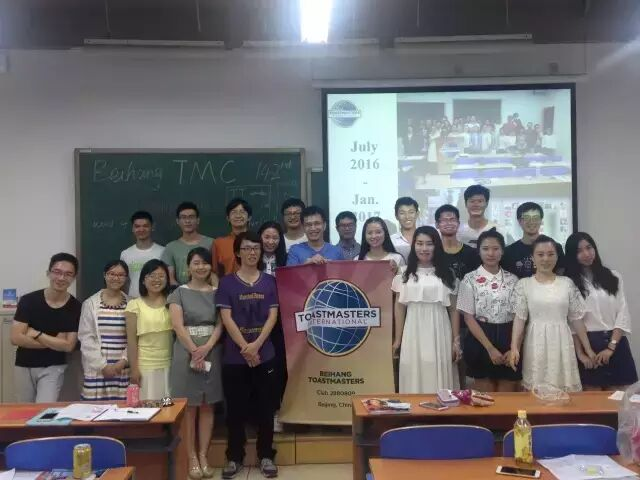
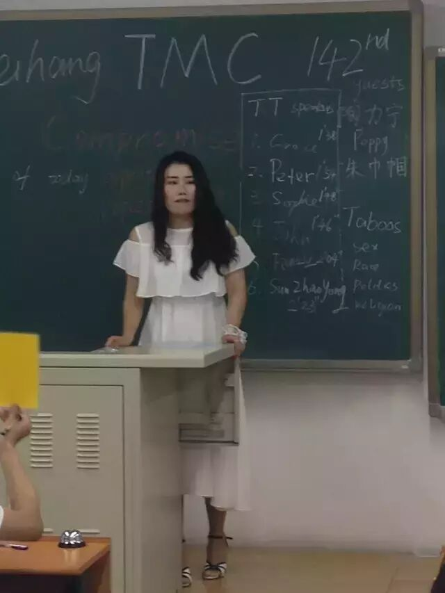
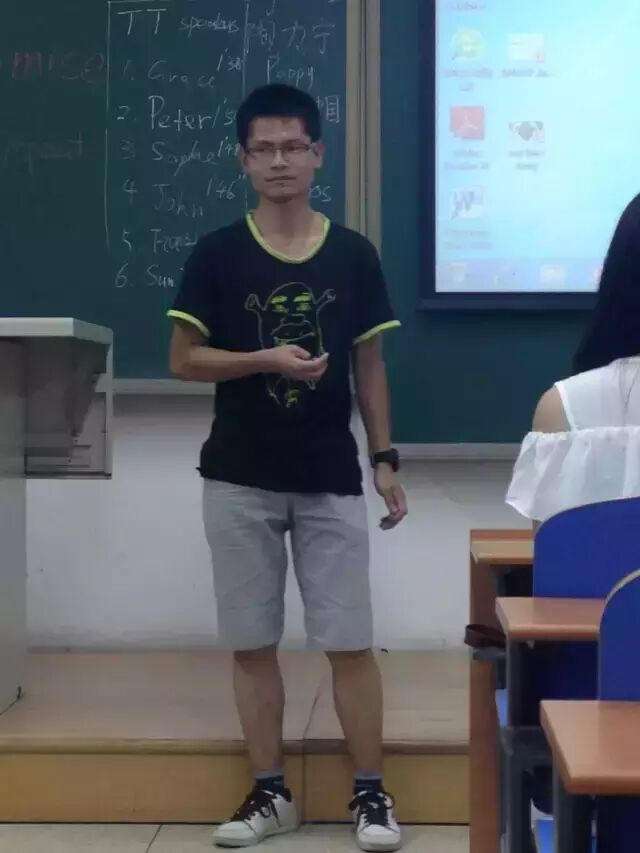
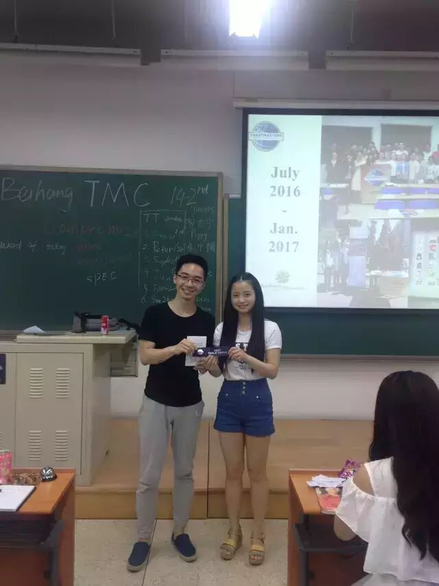
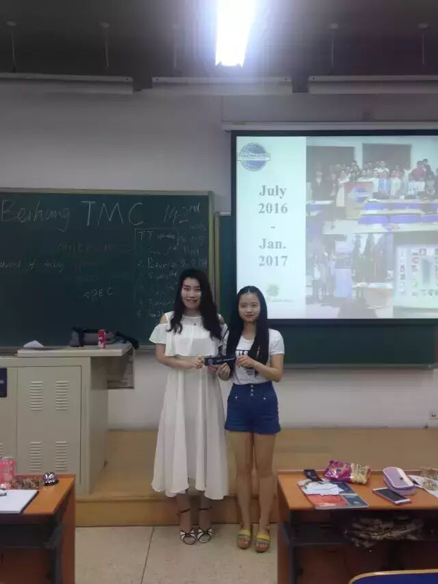
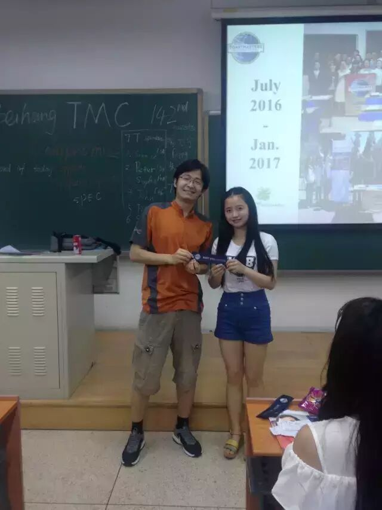
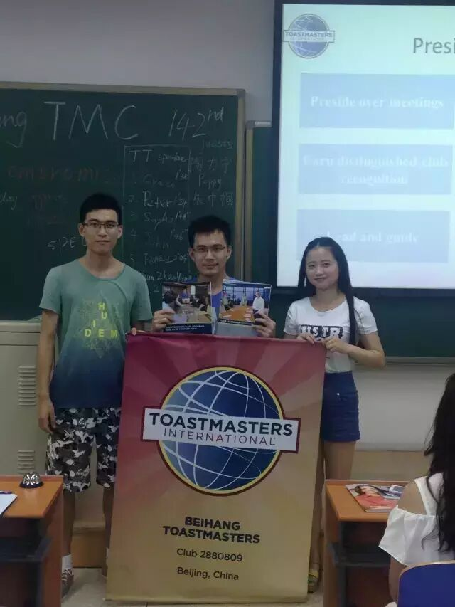
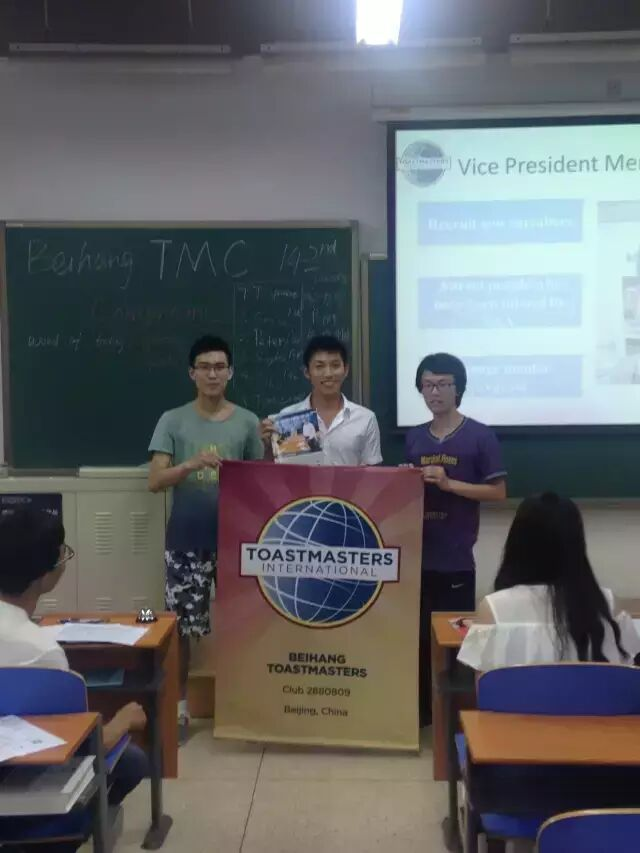
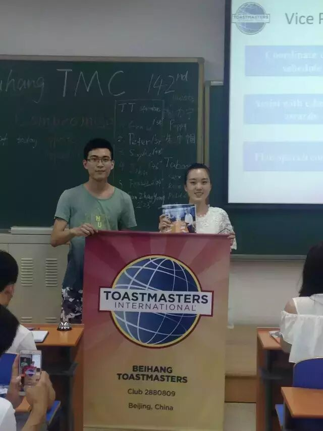
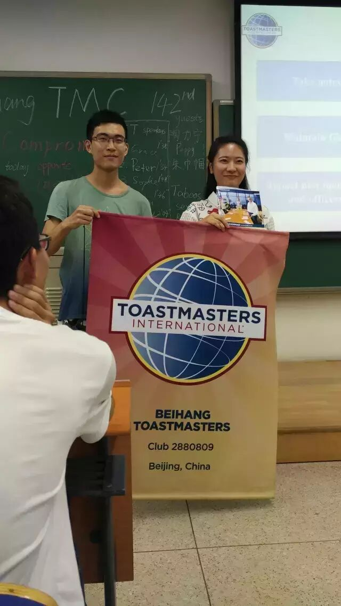
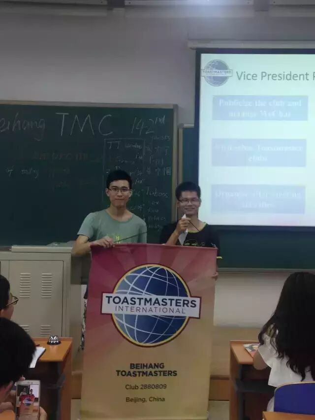
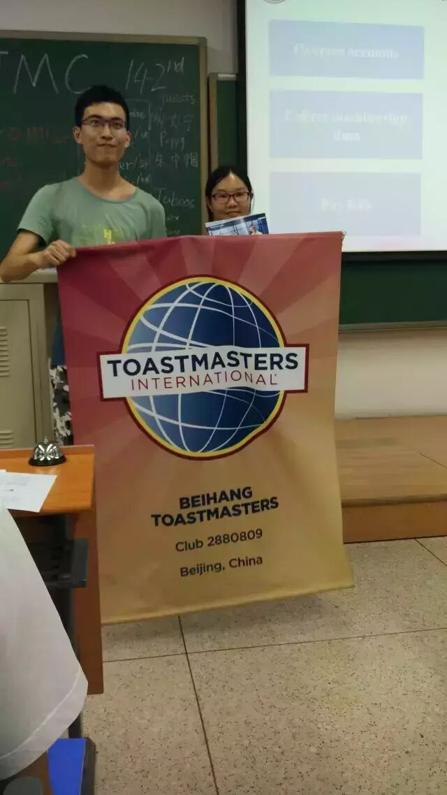
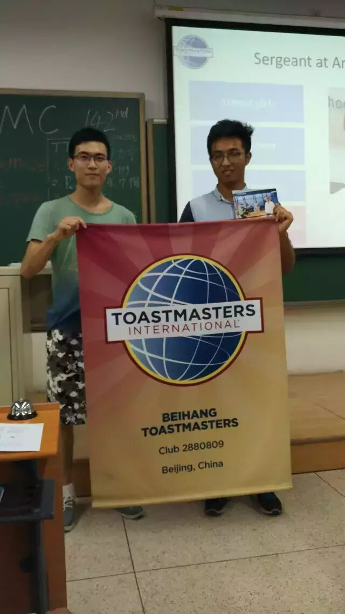
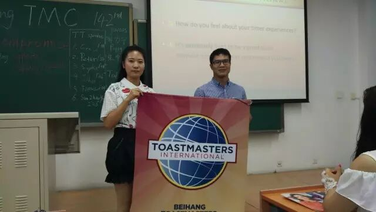
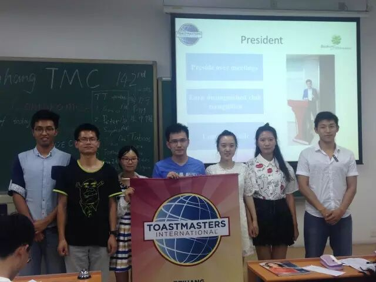
原文链接（公众号关闭后可能失效）：
https://mp.weixin.qq.com/s/74vL7z33SPqYmFvjY8dUvw
https://mp.weixin.qq.com/s/74vL7z33SPqYmFvjY8dUvw
第 304/539 篇 · 北航Toastmasters英文演讲俱乐部公众号存档
本页为抢救式本地归档，图文已永久保存。
本页为抢救式本地归档，图文已永久保存。